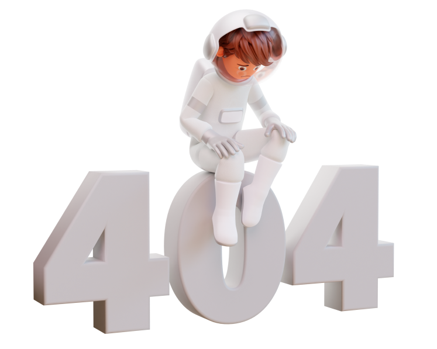

Oops, looks like the page is lost.
This is not a fault, just an accident that was not intentional.
Back to home page
Back to home page
This is not a fault, just an accident that was not intentional.